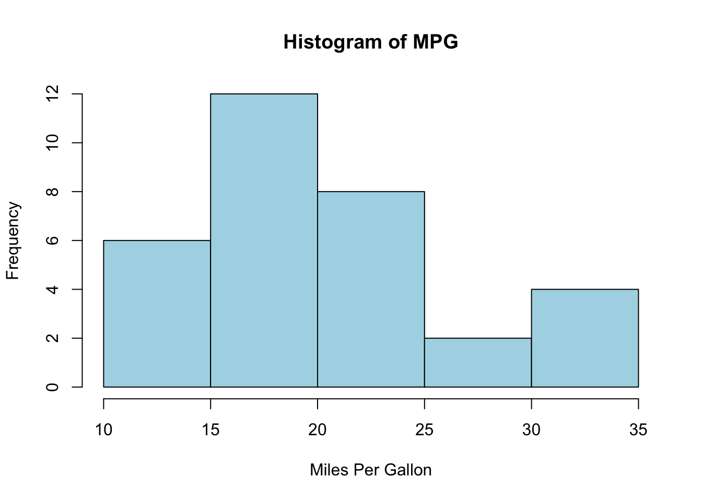
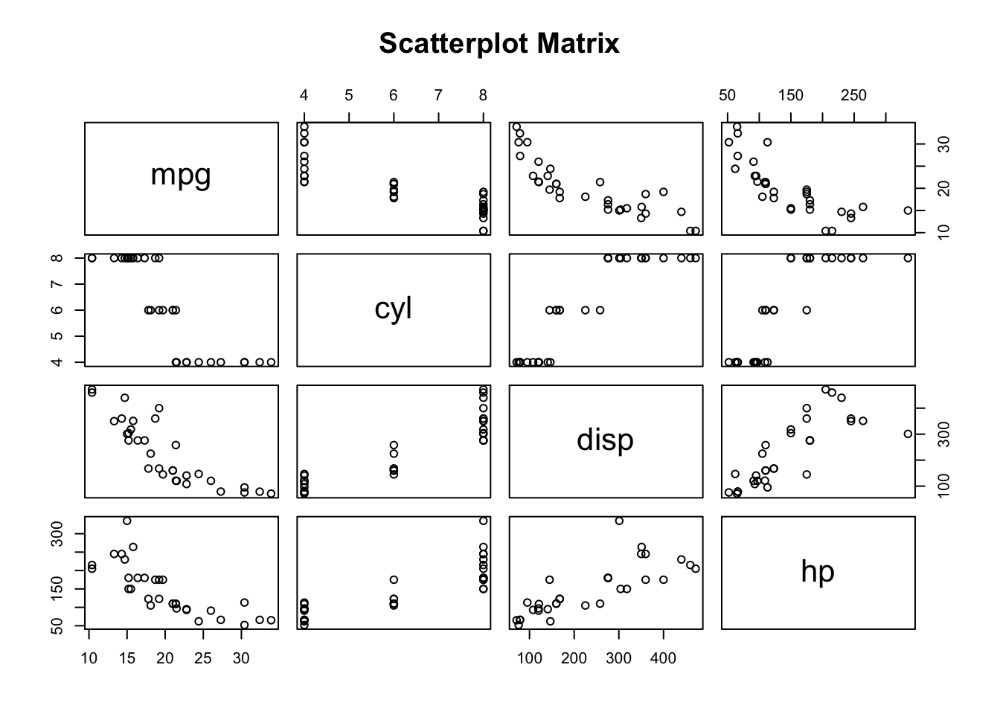
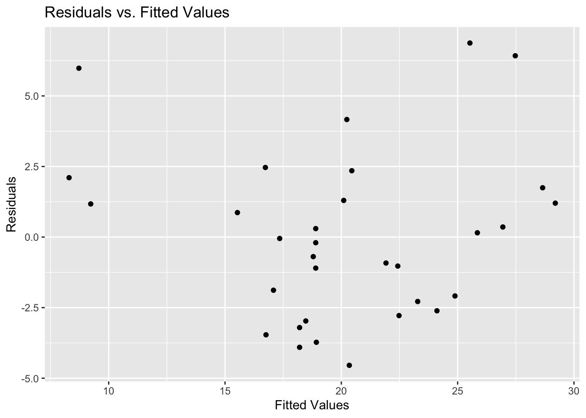

Code
setwd("~/Library/CloudStorage/Box-Box/Teaching/R_2023/local/lec3")
library(haven)Lecture 1’s link is now available on GitHub
Any Questions? Comments? Suggestions?
Control structures
if, else, ifelse)for, while, repeat, break, next)Functions:
apply family of functions (lapply, sapply, tapply, etc.)Library and Packages
Data Manipulation
basetidyversedata.tableIn this lecture, we will delve into the following topics:
merge: basejoin: dplyr1:m, m:1, 1:1 in STATAdata.tablestringrrmd file I provide you.html reportIn STATA, when merging datasets, you specify the type of merge using:
1:1: One-to-one join: Each observation in the dataset has a unique identifier, and each identifier in one dataset matches to one and only one identifier in the other dataset.1:m: One-to-many join: You start with the “many” dataset. For each unique identifier in the “many” dataset, there’s a corresponding single observation in the “one” dataset. When you perform the merge, each of the multiple observations in the “many” dataset with the same identifier gets matched to a single observation in the “one” dataset.m:1: Many-to-one join: You start with the “one” dataset. For each unique identifier in the “one” dataset, there are multiple corresponding observations in the “many” dataset. When you perform the merge, the single observation in the “one” dataset gets matched to each of the multiple observations in the “many” dataset with the same identifier.Let’s use examples to understand the link and difference between merging datasets in R and STATA. We will see two cases: 1) all keys can be matched and 2) some keys cannot be matched:
R and save the temporary data into a .dta file using the haven library.STATA commands and see if the output matches our expectations.Key Exist in Both Data SetAll three should be the same.
baseSince we need to save datasets, we need to define the working directory and libraries we are going to use as usual.
setwd("~/Library/CloudStorage/Box-Box/Teaching/R_2023/local/lec3")
library(haven)One-to-One (1:1) Merge:
df1 <- data.frame(ID = c(1, 2, 3), Name = c("Alice", "Bob", "Charlie"))
df2 <- data.frame(ID = c(1, 2, 3), Age = c(25, 30, 28))
write_dta(df1, "df1.dta")
write_dta(df2, "df2.dta")
merged_df <- merge(df1, df2, by = "ID")
write_dta(merged_df, "one_to_one_merge.dta")Many-to-One (m:1) Merge:
many_df <- data.frame(ID = c(1, 1, 2, 3), Score = c(85, 90, 88, 92))
one_df <- data.frame(ID = c(1, 2, 3), Name = c("Alice", "Bob", "Charlie"))
write_dta(many_df, "many_df.dta")
write_dta(one_df, "one_df.dta")
merged_df <- merge(many_df, one_df, by = "ID")
write_dta(merged_df, "many_to_one_merge_R.dta")One-to-Many (1:m) Merge:
(Using the same example datasets as for the m:1 merge)
merged_df <- merge(one_df, many_df, by = "ID")
write_dta(merged_df, "one_to_many_merge_R.dta")STATA Demo
We should expect the perfect match.
R Demo with dplyr: left_join and right_join
For this case, the results should be the same. Because both many_df and one_df are having information for all IDs. Let us double-check if we are using left_join, right_join in R.
First, we’ll create two data frames: teachers (the “one” dataset) and classes (the “many” dataset). Then, we’ll perform both m:1 and 1:m merges using both left and right joins, and show the results.
Here’s the R code:
# Load the required library
library(dplyr)
# Create the 'teachers' dataframe (the "one" dataset)
teachers <- data.frame(
TeacherID = c(1, 2),
TeacherName = c("Mr. Smith", "Mrs. Jones")
)
# Create the 'classes' dataframe (the "many" dataset)
classes <- data.frame(
ClassID = c("A", "B", "C"),
ClassName = c("Math", "Science", "English"),
TeacherID = c(1, 1, 2)
)
# m:1 Merge using left join (starting with 'classes' as the base)
m1_merge_left <- left_join(classes, teachers, by = "TeacherID")
# 1:m Merge using left join (starting with 'teachers' as the base)
# This produces the same result as the m:1 merge but potentially with reordered columns
one_m_merge_left <- left_join(teachers, classes, by = "TeacherID")
# m:1 Merge using right join (starting with 'classes' as the base)
m1_merge_right <- right_join(classes, teachers, by = "TeacherID")
# 1:m Merge using right join (starting with 'teachers' as the base)
one_m_merge_right <- right_join(teachers, classes, by = "TeacherID")
# Print results
list(
m1_merge_left = m1_merge_left,
one_m_merge_left = one_m_merge_left,
m1_merge_right = m1_merge_right,
one_m_merge_right = one_m_merge_right
)$m1_merge_left
ClassID ClassName TeacherID TeacherName
1 A Math 1 Mr. Smith
2 B Science 1 Mr. Smith
3 C English 2 Mrs. Jones
$one_m_merge_left
TeacherID TeacherName ClassID ClassName
1 1 Mr. Smith A Math
2 1 Mr. Smith B Science
3 2 Mrs. Jones C English
$m1_merge_right
ClassID ClassName TeacherID TeacherName
1 A Math 1 Mr. Smith
2 B Science 1 Mr. Smith
3 C English 2 Mrs. Jones
$one_m_merge_right
TeacherID TeacherName ClassID ClassName
1 1 Mr. Smith A Math
2 1 Mr. Smith B Science
3 2 Mrs. Jones C EnglishJust like before, everything matched!
keys cannot be matchedNow, let us see the behavior of left_join when there’s no match for a record in either the left or the right table, and we want this being demonstrated using both dplyr and base R.
Let’s slightly modify our datasets to have unmatched records:
teachers dataframe, let’s add a teacher with TeacherID = 3 named “Mr. Doe” who doesn’t have any associated class.classes dataframe, let’s add a class with ClassID = "D" named “History” with TeacherID = 4, but there’s no teacher with TeacherID = 4 in the teachers dataframe.Now, let’s perform the left joins using both dplyr and base R:
Using dplyr:
left_join using classes as the base.left_join using teachers as the base.Using base R:
merge with all.x = TRUE using classes as the base.merge with all.x = TRUE using teachers as the base.# Modify the datasets
teachers_modified <- rbind(teachers, data.frame(TeacherID = 3, TeacherName = "Mr. Doe"))
classes_modified <- rbind(classes, data.frame(ClassID = "D", ClassName = "History", TeacherID = 4))
# Using dplyr:
dplyr_classes_base <- left_join(classes_modified, teachers_modified, by = "TeacherID")
dplyr_teachers_base <- left_join(teachers_modified, classes_modified, by = "TeacherID")
# Using base R:
base_classes_base <- merge(classes_modified, teachers_modified, by = "TeacherID", all.x = TRUE)
base_teachers_base <- merge(teachers_modified, classes_modified, by = "TeacherID", all.x = TRUE)
list(
dplyr_classes_base = dplyr_classes_base,
dplyr_teachers_base = dplyr_teachers_base,
base_classes_base = base_classes_base,
base_teachers_base = base_teachers_base
)$dplyr_classes_base
ClassID ClassName TeacherID TeacherName
1 A Math 1 Mr. Smith
2 B Science 1 Mr. Smith
3 C English 2 Mrs. Jones
4 D History 4 <NA>
$dplyr_teachers_base
TeacherID TeacherName ClassID ClassName
1 1 Mr. Smith A Math
2 1 Mr. Smith B Science
3 2 Mrs. Jones C English
4 3 Mr. Doe <NA> <NA>
$base_classes_base
TeacherID ClassID ClassName TeacherName
1 1 A Math Mr. Smith
2 1 B Science Mr. Smith
3 2 C English Mrs. Jones
4 4 D History <NA>
$base_teachers_base
TeacherID TeacherName ClassID ClassName
1 1 Mr. Smith A Math
2 1 Mr. Smith B Science
3 2 Mrs. Jones C English
4 3 Mr. Doe <NA> <NA>NOTES:
In both the dplyr and base R results, we can observe that where there’s no match for a record in the left table, NA values are filled in for columns from the right table. Which should be similar to the m:1 results from STATA’s picture below. (NOT EXACT THE SAME BUT SAME IDEA)

Base R Methods:reshape Function:
Base R provides the reshape function, which can convert data from wide to long format and vice versa.
Wide to Long:
# Sample data
data <- data.frame(
ID = 1:3,
Time1 = c(5, 6, 7),
Time2 = c(8, 9, 10)
)
print(data) ID Time1 Time2
1 1 5 8
2 2 6 9
3 3 7 10 # Reshaping to long format
long_data <- reshape(data, direction = "long", varying = list(c("Time1", "Time2")),
v.names = "Value", idvar = "ID", timevar = "Time")
print(long_data) ID Time Value
1.1 1 1 5
2.1 2 1 6
3.1 3 1 7
1.2 1 2 8
2.2 2 2 9
3.2 3 2 10Long to Wide:
# Reshaping to wide format
wide_data <- reshape(long_data, direction = "wide", v.names = "Value",
idvar = "ID", timevar = "Time")
print(wide_data) ID Value.1 Value.2
1.1 1 5 8
2.1 2 6 9
3.1 3 7 10data.table:The data.table library offers an efficient and flexible approach to data reshaping, especially for large datasets.
Melting (Wide to Long):
library(data.table)
# Convert data frame to data table
DT <- as.data.table(data)
# Melt to long format
melted_data <- melt(DT, id.vars = "ID", measure.vars = c("Time1", "Time2"),
variable.name = "Time", value.name = "Value")
print(melted_data) ID Time Value
1: 1 Time1 5
2: 2 Time1 6
3: 3 Time1 7
4: 1 Time2 8
5: 2 Time2 9
6: 3 Time2 10Casting (Long to Wide):
# Cast to wide format
casted_data <- dcast(melted_data, ID ~ Time, value.var = "Value")
print(casted_data) ID Time1 Time2
1: 1 5 8
2: 2 6 9
3: 3 7 10Remember, the choice between base R and data.table methods often depends on your specific needs. data.table is especially powerful for large datasets due to its efficiency, while base R can be simpler for basic reshaping tasks or for those who are more familiar with its syntax.
Sys.Date(): Returns the current date.as.Date(): Converts a character string into a Date object.format(): Formats a Date object into a desired character representation.Examples
# Current date
current_date <- Sys.Date()
print(current_date)[1] "2023-09-07"# Convert a string to a date
date_str <- "2023-08-16"
converted_date <- as.Date(date_str)
print(converted_date)[1] "2023-08-16"# Format a date
formatted_date <- format(current_date, format="%B %d, %Y")
print(formatted_date)[1] "September 07, 2023"# Define starting and ending dates
start_date <- as.Date("2023-01-01")
end_date <- as.Date("2023-01-10")
# Create a sequence of dates
date_seq <- seq(start_date, end_date, by="days")
# Convert the sequence to a data frame
date_df <- data.frame(Date = date_seq)
# Print the data frame
print(date_df) Date
1 2023-01-01
2 2023-01-02
3 2023-01-03
4 2023-01-04
5 2023-01-05
6 2023-01-06
7 2023-01-07
8 2023-01-08
9 2023-01-09
10 2023-01-10Text data often contains noise in the form of special characters, inconsistencies in formatting, and more. Properly cleaning and manipulating such data is crucial.
stringr package in R offers a host of functions that can aid in this.gsub in base R can do a lot similar functions, I will leave that to you for the future study. Some examples have been provided in the Appendix Section.str_replace_all(): Replaces all instances of a pattern in a string.Examples
library(stringr)
text <- "Hello, world! This is a test. #Test123"
cleaned_text <- str_replace_all(text, "[^[:alnum:][:space:]]", "")
print(cleaned_text)[1] "Hello world This is a test Test123"str_detect(): Detects the presence or absence of a pattern in a string.str_which(): Returns the indices of strings that match a pattern.str_match(): Extract matched groups from a string based on a pattern.Examples
# Detect if a string contains "world"
text <- c("Hello world", "Hello R", "R is a world of statistics")
print(str_detect(text, "world"))[1] TRUE FALSE TRUE# Get indices of strings that contain "R"
print(str_which(text, "R"))[1] 2 3# Extract matched groups
pattern <- "(\\d{4})-(\\d{2})-(\\d{2})"
date_str <- "Today's date is 2023-08-16."
print(str_match(date_str, pattern)) [,1] [,2] [,3] [,4]
[1,] "2023-08-16" "2023" "08" "16"str_to_upper(): Converts strings to upper case.str_to_lower(): Converts strings to lower case.str_to_title(): Converts strings to title case.Examples
text <- "Hello, World!"
print(str_to_upper(text))[1] "HELLO, WORLD!"print(str_to_lower(text))[1] "hello, world!"print(str_to_title(text))[1] "Hello, World!"str_split(): Splits a string into parts.Examples
text <- "apple,banana,grape"
print(str_split(text, ","))[[1]]
[1] "apple" "banana" "grape" stringr functions in R with examplesstr_length(): Computes the length of a string.str_c(): Concatenates strings.str_sub(): Extracts or replaces substrings.library(stringr)
# String length
print(str_length("Hello, world!"))[1] 13# Concatenate
print(str_c("Hello", "world", sep=", "))[1] "Hello, world"# Substring
print(str_sub("Hello, world!", 1, 5))[1] "Hello"unique(): Returns a vector of unique values.
vec <- c(1, 2, 2, 3, 4, 4, 4, 5)
unique_vals <- unique(vec)
print(unique_vals)[1] 1 2 3 4 5duplicated(): Returns a logical vector indicating whether an element is a duplicate.
vec <- c(1, 2, 2, 3, 4, 4, 4, 5)
dupes <- duplicated(vec)
print(dupes)[1] FALSE FALSE TRUE FALSE FALSE TRUE TRUE FALSEdistinct() from the dplyr package: Used to remove duplicate rows from a data frame or tibble.
library(dplyr)
df <- data.frame(name = c("Alice", "Bob", "Alice", "Charlie"), age = c(25, 30, 25, 35))
distinct_df <- distinct(df)
print(distinct_df) name age
1 Alice 25
2 Bob 30
3 Charlie 35seq_along(): Generate a sequence along an object’s length.
vec <- c("apple", "banana", "cherry")
uids <- seq_along(vec)
print(uids)[1] 1 2 3make.unique(): Generates unique strings by appending numbers.
vec <- c("apple", "apple", "banana")
unique_vec <- make.unique(vec)
print(unique_vec)[1] "apple" "apple.1" "banana" isid()The isid() function checks if a given set of variables uniquely identifies the observations in a dataset. Just like the one we are using in STATA.
eeptools package for this.library(eeptools)
df <- data.frame(id = c(1, 2, 3, 1), value = c(10, 20, 30, 40))
# Check if 'id' uniquely identifies the data
isid(df, "id", verbose = TRUE)Are variables a unique ID?
[1] FALSE
Variables define this many unique rows:
[1] 3
There are this many total rows in the data:
[1] 4In this example, the isid() function would return FALSE because the ‘id’ variable does not uniquely identify each row in the dataset.
Before diving into any data analysis, it’s essential to understand and clean your data. This involves checking for outliers, handling missing values, and visualizing data distributions.
For our demonstration, we’ll use the mtcars dataset.
data(mtcars)Outliers can significantly affect regression results. A simple way to check for outliers is by using boxplots.
boxplot(mtcars$mpg, main="Boxplot of MPG", ylab="Miles Per Gallon")
Points outside the “whiskers” of the boxplot could be potential outliers.
Data often comes with missing values, and it’s crucial to handle them appropriately.
Identifying Missing Values
Use is.na() to identify missing values:
missing_vals <- is.na(mtcars$mpg)
sum(missing_vals)[1] 0na.omit()Visualizing your data can help in understanding distributions, relationships, and potential issues.
hist(mtcars$mpg, main="Histogram of MPG", xlab="Miles Per Gallon", col="lightblue")
pairs(mtcars[, 1:4], main="Scatterplot Matrix")
ggplot(mtcars, aes(x=mpg)) +
geom_density(fill="blue", alpha=0.5) +
labs(title="Density Plot of MPG", x="Miles Per Gallon")
By conducting these preliminary checks, you ensure that your data is ready for deeper analysis, and any insights or results derived are more likely to be reliable.
mtcars example)Make sure you’ve installed the packages: tidyverse, lmtest
Done the first-round preliminary data check.
library(tidyverse)
library(lmtest)A regression allows us to understand relationships between variables. The simplest form is the linear regression, represented as:
\[ Y = \beta_0 + \beta_1 X + \epsilon \]
Where: - \(Y\) is the dependent variable. - \(X\) is the independent variable. - \(\beta_0\) is the intercept. - \(\beta_1\) is the slope. - \(\epsilon\) is the error term.
model <- lm(mpg ~ wt, data = mtcars)
summary(model)
Call:
lm(formula = mpg ~ wt, data = mtcars)
Residuals:
Min 1Q Median 3Q Max
-4.5432 -2.3647 -0.1252 1.4096 6.8727
Coefficients:
Estimate Std. Error t value Pr(>|t|)
(Intercept) 37.2851 1.8776 19.858 < 2e-16 ***
wt -5.3445 0.5591 -9.559 1.29e-10 ***
---
Signif. codes: 0 '***' 0.001 '**' 0.01 '*' 0.05 '.' 0.1 ' ' 1
Residual standard error: 3.046 on 30 degrees of freedom
Multiple R-squared: 0.7528, Adjusted R-squared: 0.7446
F-statistic: 91.38 on 1 and 30 DF, p-value: 1.294e-10The summary() function provides a detailed summary of the regression results. Here, we are trying to predict mpg (miles per gallon) using the weight (wt) of the car, using the mtcars dataset.
We can save the summary of the model first:
model_summary <- summary(model)And we can see that it is a list! This is something we’ve already learned.
From this summary object, you can extract:
coefficients: A matrix where each row represents a predictor (including the intercept) and columns provide details like estimate, standard error, t-value, and p-value.sigma: The residual standard error.r.squared: The R-squared value.adj.r.squared: The adjusted R-squared value.fstatistic: The F-statistic value and its degrees of freedom.# Access using summary list
coeff_matrix <- model_summary$coefficients
print(coeff_matrix) Estimate Std. Error t value Pr(>|t|)
(Intercept) 37.285126 1.877627 19.857575 8.241799e-19
wt -5.344472 0.559101 -9.559044 1.293959e-10# Directly access using `coefficients` functions for regression objects
betas <- coefficients(model) # this will give you only the betas
print(betas)(Intercept) wt
37.285126 -5.344472 The standard errors of the coefficients can be extracted from the model’s summary object.
standard_errors <- coeff_matrix[, "Std. Error"]
print(standard_errors)(Intercept) wt
1.877627 0.559101 t_values <- summary(model)$coefficients[, "t value"]
print(t_values)(Intercept) wt
19.857575 -9.559044 p_values <- summary(model)$coefficients[, "Pr(>|t|)"]
print(p_values) (Intercept) wt
8.241799e-19 1.293959e-10 Visualizing the relationship between the independent and dependent variables can be very insightful.
ggplot(mtcars, aes(x=wt, y=mpg)) +
geom_point() +
geom_smooth(method="lm", col="red") +
labs(title="Relationship between Car Weight and MPG", x="Weight", y="Miles Per Gallon")`geom_smooth()` using formula = 'y ~ x'
Checking the residuals can help diagnose potential issues with the model.
residuals <- resid(model)
fitted_values <- fitted(model)
ggplot() +
geom_point(aes(x=fitted_values, y=residuals)) +
labs(title="Residuals vs. Fitted Values", x="Fitted Values", y="Residuals")
This comprehensive project is designed to review the concepts you’ve learned throughout the course. You’ll apply techniques from data cleaning to advanced data analysis. We’ll work with both built-in datasets and an external dataset.
mtcarsCreate a workflow for this project in the following steps:
Under lec3 folder, create a sub folder lec3_proj
Under lec3_proj folder, create two sub folders: code and data
Under data folder, create three sub folders: raw, temp, and cleaned
Your directories should look like this:
lec3_proj.Rmdlec3_proj.Rmd from GitHub into your code folder~/lec3/lec3_proj/code/set.seed(123)
# Number of clients
n_clients <- 200
# 1. Generate 'name' column
client_data <- data.frame(name = paste0("Client_", seq(1, n_clients)))
# 2. Generate 'car_bought' column. Initially, just a random sample
client_data$car_bought <- sample(rownames(mtcars), n_clients, replace = TRUE)
# 3. Generate 'date_purchased' column
client_data$date_purchased <- sample(seq(as.Date('2015/01/01'), as.Date('2022/01/01'), by="day"), n_clients, replace=TRUE)
# 4. Generate 'income' column
client_data$income <- runif(n_clients, min=30000, max=150000)
# 5. Ensure richer clients are more likely to buy cars with more horsepower
# Sort mtcars by horsepower
sorted_cars <- rownames(mtcars[order(mtcars$hp), ])
# Divide clients into groups and assign cars based on sorted horsepower
split_rows <- ceiling(n_clients / length(sorted_cars))
client_data <- client_data[order(-client_data$income), ] # sort by income
client_data$car_bought <- rep(sorted_cars, times = split_rows)[1:n_clients]
# Show the transformed client_data
head(client_data)
# Write the data to a CSV
write.csv(client_data, "../data/raw/client_data.csv", row.names = FALSE)mtcars. - Create a column named ID, which is the same as the rownames.sum, and is.na() function.mpg column of the mtcars dataset. - Hint: using boxplot() function, and use ?boxplot() to learn the syntax.car_ID, and car_bought.merge from base and join from dplyr to combine. Discuss the differences.merged_data_basemerged_data_dplyrdata.table to reshape the merged data set.temp folder.mpg for each unique value in Car_ID.client_data.csv.as.Date()Client_ using str_replace()name is a unique identifier using:isid()length(unique(DATA$UID))==nrow(DATA)5.5. Save and Use Cleaned Data to Proceed - Save the “merged_data_base” into the cleaned folder, named as: merged_data_base_cleaned.csv
Regression Analysis:
mpg from another continuous variable.
mpg ~ wtmpg using a scatter plot.
plot(merged_data_base$wt, merged_data_base$mpg, ...)abline()matrix()coefficients(model)identity_matrix <- diag(2)%*%) to multiply the identity matrix by the coefficients matrix. The result will be the coefficients themselves.for loop that iterates over the column names of the merged dataset (excluding mpg). In each iteration, run a regression using mpg as the dependent variable and the current column as the independent variable. Store each coefficient in a vector.mpg.mpg? Are the results consistent with expectations?Control Structures and Custom Functions:
for loop to calculate the mean of each numeric column in the merged dataset. (HARD: Don’t Do it now). Hints:
ifelse to categorize mpg into “Low”, “Medium”, “High”. Apply this function to the dataset.
ifelse(..., ifelse(,...))while loop to find the first row in the merged dataset where mpg is above a certain threshold (e.g., 25).apply Family:
lapply to calculate the range of each numeric column in the merged dataset. (HARD, don’t do it now)range_function <- function(x) c(min=min(x, na.rm=TRUE), max=max(x, na.rm=TRUE))sapply to get the type of each column in the dataset.sapply(data, class)tidyverse functions to filter rows, select columns, and arrange the dataset.data.table to efficiently modify the dataset in place.sapply function.mpg for cars that are above and below the median weight. Compare the results and provide an interpretation.You can find the solution here.
gsubThe gsub() function is part of base R, and it’s a powerful tool for replacing patterns in strings. gsub() stands for “global substitution”. It searches for all matches of a pattern in a string and replaces them with a specified replacement string.
gsub(pattern, replacement, x, ignore.case = FALSE, perl = FALSE, fixed = FALSE, useBytes = FALSE)pattern: The pattern to search for.replacement: The string to replace the pattern with.x: The input string.ignore.case: Should the match be case-insensitive?perl: Should Perl-compatible regex be used?fixed: If TRUE, pattern is a string to be matched as is (turns off special characters).useBytes: Should bytes be used for matching (relevant for non-ASCII strings)?text <- "The cat sat on the mat."
new_text <- gsub("cat", "dog", text)
print(new_text)[1] "The dog sat on the mat."gsub() to remove special characters:text <- "Hello, world! This is a test. #Test123"
cleaned_text <- gsub("[^[:alnum:][:space:]]", "", text)
print(cleaned_text)[1] "Hello world This is a test Test123"text <- "Hello World"
new_text <- gsub("world", "R", text, ignore.case = TRUE)
print(new_text)[1] "Hello R"text <- "This has multiple spaces."
new_text <- gsub("\\s+", " ", text)
print(new_text)[1] "This has multiple spaces."gsub() is one of the primary string manipulation functions in base R and is often used in scenarios where you don’t want to or can’t rely on external packages.
Dr. Qingxiao Li’s notes for R-Review 2020
Rodrigo Franco’s notes for R-Review 2021